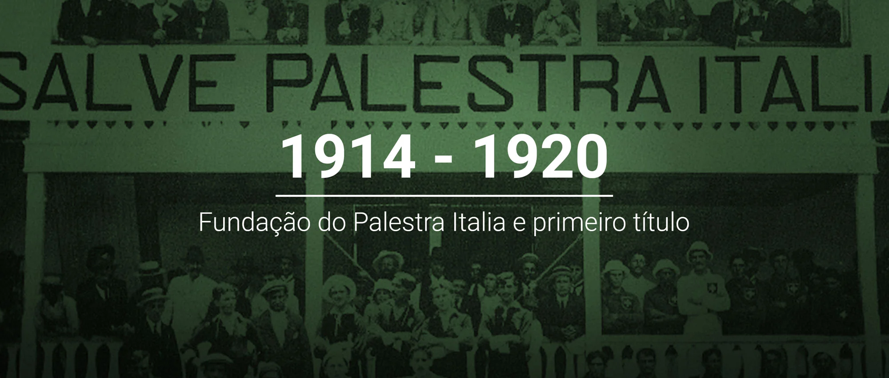
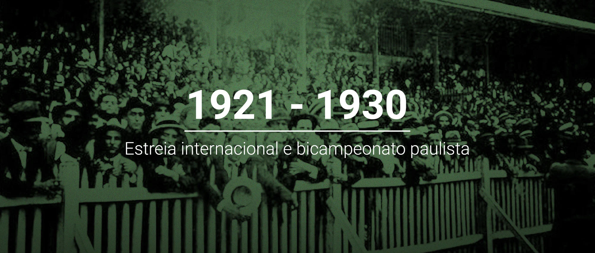
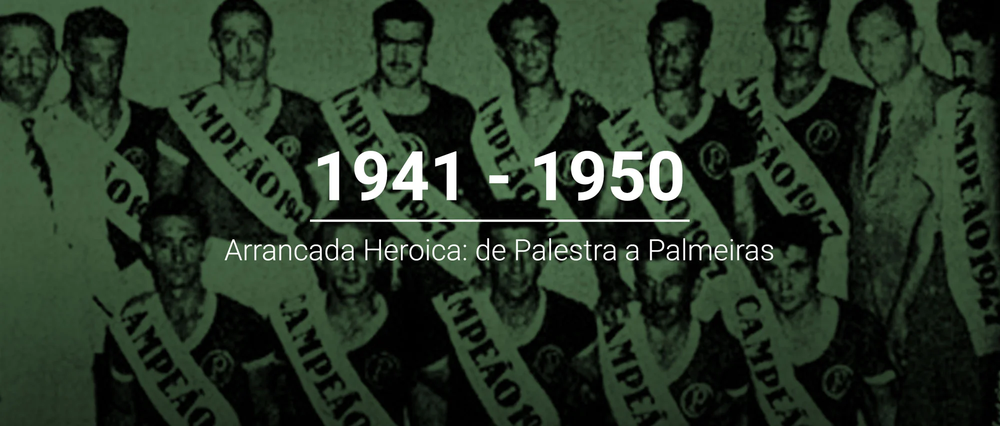
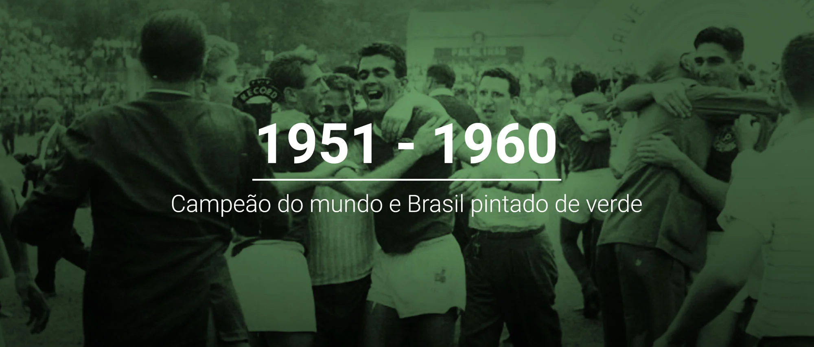
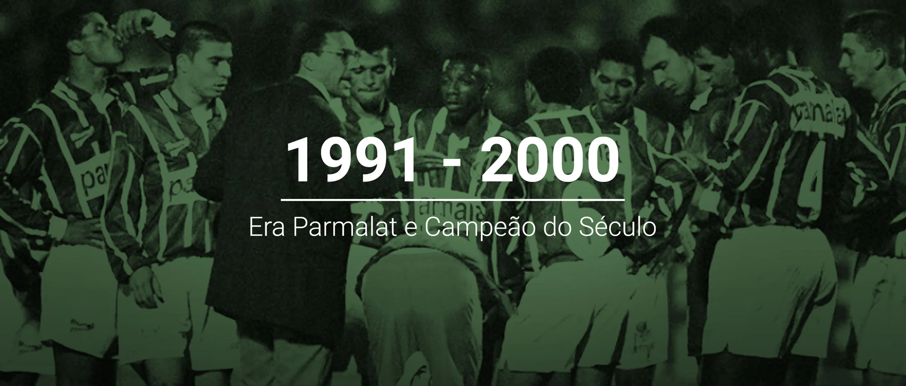
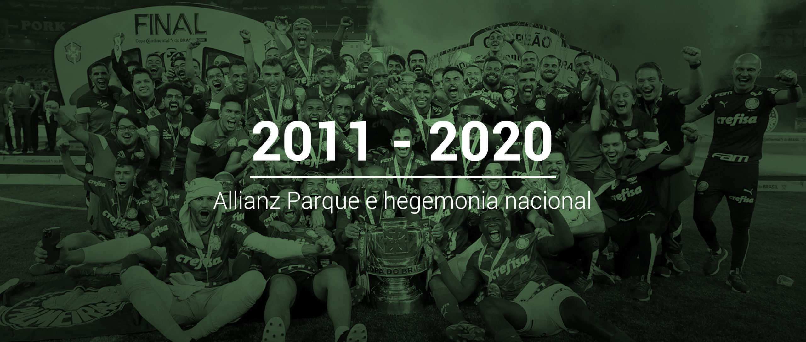

1914 a 1920, fundação do palestra italia...
A história da Sociedade Esportiva Palmeiras começa efetivamente em 1914 por iniciativa de, em
sua maioria, moradores do à época italianíssimo bairro do Brás, em São Paulo, muitos deles
funcionários das Indústrias Matarazzo, entusiasmados pela excursão do Torino-ITA e do
Pro-Vercelli-ITA ao Brasil naquele mesmo ano. Um dos mais envolvidos era o jovem jornalista Vincenzo
Ragognetti, que publicou no Fanfulla (órgão de imprensa voltado à colônia italiana na capital
paulista) um convite aos interessados na fundação de uma agremiação esportiva que tivesse a
representatividade que a imensa comunidade merecia.
O clube poderia ter sido fundado no dia 19 de agosto, mas não houve acordo com relação às diretrizes da instituição. Uma nova reunião, então, foi agendada para a semana seguinte, dia 26 de agosto de 1914, no extinto Salão Alhambra, situado na antiga Rua Marechal Deodoro, nº 2 (região onde hoje se localiza a Praça da Sé), e na presença de 46 pessoas (entre elas, italianos, brasileiros, dois portugueses e um espanhol) foi fundado o Palestra Italia.

1921 a 1930, Estreia internacional e bicampeão paulista!
Cada vez mais consolidado entre os principais times da cidade, o Palestra Italia disputou sua
primeira partida internacional em outubro de 1922, com vitória por 4 a 1 sobre a Seleção Paraguaia
(então vice-campeã sul-americana), em amistoso realizado na Chácara da Floresta e válido pela
simbólica Taça Guarani. Além disso, o clube comemorou pela primeira vez um bicampeonato paulista, em
1926 (título invicto) e 1927, faturou uma edição extra do Paulistão, em 1926 (de novo invicto), e,
no mesmo ano, conquistou a Copa dos Campeões Estaduais Rio-São Paulo, o primeiro título
interestadual da extensa galeria de conquistas palestrinas.
A década também foi de crescimento para os esportes olímpicos: a agremiação participou da fundação de importantes federações estaduais e nacionais, com destaque para o basquete, introduzido ao clube em 1923. O Palestra Italia firmou-se como a primeira grande dinastia na modalidade ao vencer sete títulos paulistas em apenas oito anos de atividades, possibilitando grande impulso e desenvolvimento para o esporte nas décadas de 1920 e 1930.

1931 a 1940, tricampeão, com o pé e com a mão
O Palestra Italia colecionou títulos importantes ao longo da década de 30. Além de comemorar seu
primeiro (e até hoje único) tricampeonato paulista, em 1932, 1933 e 1934, levou os troféus estaduais
de 1936 e 1940, sagrou-se campeão da segunda e última edição do Campeonato Paulista Extra, em 1938
(já havia levado a taça na primeira edição, em 1926), e conquistou o primeiro Torneio Rio-São Paulo
da história, em 1933. Em marcha vitoriosa, o Palestra tornou-se também tricampeão estadual de
basquete nos mesmos anos de 1932 (quando foi disputada a primeira edição do torneio), 1933 e 1934,
fazendo com que a torcida palestrina comemorasse com o grito de “com o pé e com a mão, o Palestra é
campeão”.

1941 a 1950, Arrancada heróica: de palestra a palmeiras
Era março de 1942, durante a Segunda Guerra Mundial, quando o governo Getúlio Vargas instituiu o
decreto que proibia a qualquer entidade o uso de nomes relacionados aos países do Eixo (Alemanha,
Itália e Japão), uma vez que o Brasil entrara no conflito reforçando os Aliados (EUA, Reino Unido,
França e União Soviética) . O Palestra Italia, então, viu-se obrigado a mudar de nome, passando a se
chamar Palestra de São Paulo no dia 13 de março de 1942. A troca de “Italia” por “São Paulo” não foi
suficiente para aplacar a perseguição de alguns adversários e até alguns veículos de comunicação,
que polemizavam as raízes do clube mesmo sabendo-se que a palavra “Palestra” era de origem grega.
Sob ameaça de perder o patrimônio e ser retirado do campeonato que liderava, o Palestra não se deu
por vencido e, em 14 de setembro de 1942, passou a se chamar Sociedade Esportiva Palmeiras, uma
homenagem à extinta Associação Atlética das Palmeiras e uma forma de manter o tradicional P no
escudo da camisa e a ainda mais tradicional cor verde.

1951 a 1960, campeão do mundo e Brasil pintando verde
Em 1951, o mundo foi Palmeiras. Com apoio do então presidente da Fifa, Jules Rimet, o Primeiro
Campeonato Mundial de Clubes (Copa Rio) foi disputado no Brasil com a participação de oito times,
divididos em duas chaves de quatro: Vasco da Gama (Brasil), Áustria Viena (Áustria), Nacional
(Uruguai) e Sporting (Portugal), com sede no Rio de Janeiro; Palmeiras (Brasil), Juventus (Itália),
Estrela Vermelha (Iugoslávia) e Olympique de Nice (França), com sede em São Paulo.
Ao final da fase classificatória, coube a Palmeiras e Juventus decidirem o título em duas partidas.
O Verdão venceu o primeiro jogo no Maracanã por 1 a 0, gol de Rodrigues, no dia 18 de julho. O
segundo jogo, também no Maracanã, no dia 22 de julho, terminou empatado em 2 a 2, gols de Rodrigues
e Liminha. Com esse resultado, o Alviverde tornou-se o primeiro campeão mundial de clubes da
história.

1961 a 1970, primeira academia e verdão é seleção
A década de 60 marcou o Palmeiras como a "Primeira Academia de Futebol", liderada por Ademir da
Guia, devido à sua excelência e conquistas. No estadual, o Palmeiras conquistou os Paulistas de 1963
e 66, somados ao de
1959, impedindo uma sequência de 12 títulos do Santos (time de Pelé na época).
Em 1965, sob o comando do técnico Filpo Nuñes, o time venceu o Rio-São Paulo com atuações
brilhantes, incluindo goleadas históricas contra Santos, Botafogo e São Paulo.
O ano de 1965 foi único: o elenco e comissão técnica do Palmeiras foram convocados para
representar a Seleção Brasileira na inauguração do Mineirão, vencendo o Uruguai por 3 a 0. Foi a
primeira e única vez que um clube inteiro representou o Brasil.
O final da década isso se consolidou: o Palmeiras se tornou bicampeão brasileiro em 1967
(vencendo a Taça Brasil e o recém-criado Torneio Roberto Gomes Pedrosa) e tetracampeão em 1969 (com
mais um Robertão). Internacionalmente, faturou o Torneio Ramón de Carranza, na Espanha, em 1969,
batendo o Real Madrid na decisão.

1971 a 1980, segunda academia e recorde de público
Pouco tempo após o fim da Primeira Academia, novos reforços se uniram aos remanescentes Dudu e
Ademir da Guia na formação da Segunda Academia, que desfilou talento pelos gramados na mesma
proporção em que conquistou títulos, o time foi três vezes campeão paulista (uma delas de forma
invicta), foi bicampeão brasileiro, faturou mais dois Troféus Ramón de Carranza na Espanha (batendo
o Español em 1974 e o Real Madrid em 1975) e venceu o Torneio de Mar del Plata na Argentina
(superando Peñarol, Boca Juniors e San Lorenzo), entre outras conquistas. No período, alguns craques
ganharam destaque e se tornaram ídolos, como o goleiro Leão, os zagueiros Luís Pereira e Alfredo, os
atacantes Leivinha, Edu Bala, César Maluco e Nei e, mais tarde, o meia Jorge Mendonça. Em 1972, já
sob o comando de Oswaldo Brandão (campeão como técnico dos Paulistões de 1947 e 1959 e do Brasileiro
de 1960), o Palmeiras fez história e conquistou todos os títulos que disputou.

1981 a 1990, Adoção de porco e recorde de invencibilidade
Mas não por isso o ano de 1986 deixou de ficar marcado na memória do torcedor. Afinal, no dia 29
de
outubro daquela temporada, o palmeirense assumiu definitivamente o “Porco” como mascote. Numa
partida contra o Santos, ao ouvir tímidos gritos de “porco” vindos da torcida rival, os palmeirenses
responderam com um “e dá-lhe Porco!! e dá-lhe Porco!! olê, olê, olê…” e “Porcoôôô..”. Alguns dias
depois, para consagrar mudança, a Revista Placar estampou em sua capa o ídolo Jorginho Putinatti,
símbolo daquela geração, segurando um porco no colo.
No período, o Palmeiras também construiu a maior série invicta do mundo de um clube em seu estádio.
Atuando dentro do Palestra Italia, o time alviverde defendeu 68 jogos de invencibilidade, entre 23
de fevereiro de 1986 e 16 de setembro de 1990 – foram 44 vitórias e 24 empates atuando diante de sua
torcida.

1991 a 2000, era parmalat e campeão do século
Impulsionado pela parceria com a Parmalat, o Palmeiras encerrou um jejum de 16 anos, vencendo o
histórico Paulista de 1993 ao golear o Corinthians por 4 a 0 na final, com o gol decisivo de Evair
na prorrogação.
O Verdão, sob comando de Luxemburgo, emendou o bi consecutivo do Campeonato Brasileiro (1993 e
1994), superando o Santos em títulos nacionais. Em 1994, com Rivaldo, bateu o arquirrival na
decisão.
Em 1996, com Djalminha, venceu o Paulistão de forma avassaladora, com mais de 100 gols e recorde de
aproveitamento (92,2%).
O período de sucesso culminou na inédita conquista da Copa Libertadores da América de 1999, um dos
maiores feitos do clube, com ídolos como Marcos (consagrado nos pênaltis contra o Deportivo Cali),
Zinho e Evair. O time também faturou a Copa do Brasil e a Copa Mercosul, ambas em 1998.
Fechando a década, em 2000, conquistou o Rio-São Paulo e a Copa dos Campeões. Pelas inúmeras
conquistas, o Palmeiras foi proclamado o Campeão do Século XX do futebol brasileiro.

2001 a 2010, reconstrução dentro e fora de campo
O fim da Era Parmalat em 2000 forçou uma grande reconstrução política e administrativa. Apesar
da reformulação, o Palmeiras chegou à semifinal da Libertadores de 2001 (terceiro ano seguido).
Contudo, 2002 marcou um dos momentos mais difíceis: o clube foi rebaixado para a Série B do
Campeonato Brasileiro. A boa notícia foi a permanência do goleiro Marcos, recém-pentacampeão
mundial.
Em 2003, o clube apostou nas categorias de base, e o trio Diego Souza, Edmílson e Vagner Love foi
fundamental na campanha do título da Série B, garantindo o retorno à elite em 2004.
Após anos de jejum, a consagração veio em 2008. Com a volta do técnico Vanderlei Luxemburgo e a
chegada de Valdivia, o Palmeiras conquistou seu 22º título paulista com uma goleada de 5 a 0 sobre a
Ponte Preta.
Em 2009, o time liderou o Brasileirão por boa parte, mas perdeu o título nas rodadas finais. Em
2010, Luiz Felipe Scolari (Felipão) retornou. A temporada também foi marcada pela despedida do
Estádio Palestra Italia, iniciando o projeto da moderna arena.

2011 a 2020, Allianz Parque e hegemonia nacional
Após um ano sem títulos (2011), o Palmeiras de Felipão conquistou a Copa do Brasil de 2012,
ampliando a liderança como Maior Campeão Nacional. Contudo, em 2012, o clube sofreu seu segundo
rebaixamento (voltando em 2014).
O Allianz Parque foi inaugurada em 2014, presente de Centenário, substituindo o Palestra Italia. O
clube passou por modernização administrativa e o programa Avanti cresceu.
Com a Crefisa e reforços, o Palmeiras voltou a vencer em 2015, conquistando a Copa do Brasil nos
pênaltis contra o Santos, consolidando a marca de Maior Campeão do Brasil. A hegemonia se firmou em
2016 com o Eneacampeonato Brasileiro (após 22 anos), sob o comando de Cuca, e o Decacampeonato em
2018 com Felipão.
Em 2020, o Palmeiras, com o retorno de Vanderlei Luxemburgo, encerrou um jejum e ganhou o Paulista
na final contra o Corinthians. Em novembro, sob o comando do português Abel Ferreira, o clube
alcançou a histórica Tríplice Coroa (Paulista, Libertadores, gol de Breno Lopes na final contra o
Santos e Copa do Brasil), tornando 2020 a temporada mais vitoriosa.

2021 a 2025, a era Abel Ferreira e terceia academia
A partir de 2021, a Era Abel Ferreira solidificou o Palmeiras como potência, marcada por títulos e a ascensão da Terceira Academia.
Em 2021, o Verdão conquistou o inédito Bicampeonato da Libertadores (tri da história), batendo o
Flamengo, além da Recopa Sul-Americana e Paulistão em 2022. O clube alcançou o domínio nacional em
2022 e 2023, vencendo o Campeonato Brasileiro em ambas as temporadas (12º título nacional), e o Bi
Paulistão consecutivo.
Em 2025, o Palmeiras ainda não conquistou nenhum título, atualmente lidera o Campeonato Brasileiro, além de estar na final da Copa
Libertadores contra seu rival Flamengo. O elenco foi reforçado com contratações caras como Vitor Roque, Andreas Pereira e Paulinho. No Super Mundial de Clubes, o Verdão perdeu na semifinal para o Chelsea.
Abel Ferreira é o técnico mais vitorioso do clube. O time, com a mescla de experiência (Weverton,
Gómez, Veiga) e os talentos da base, se estabeleceu como o Maior Campeão do Brasil no Século XXI.